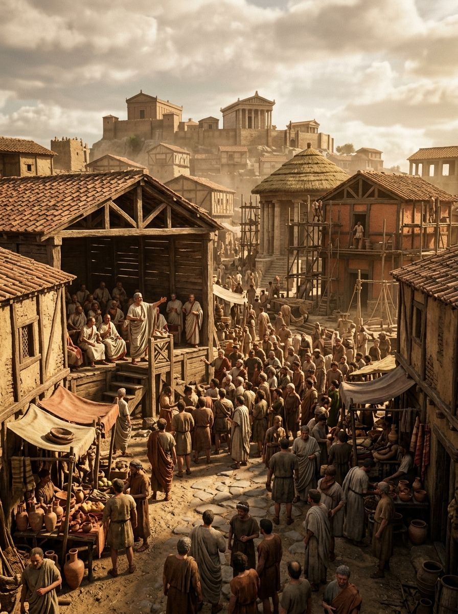

Julio César y el Cruce del Rubicón
En enero del año 49 antes de Cristo, en la orilla sur del río Rubicón —el pequeño río del norte de Italia que marcaba el límite constitucional entre la Galia Cisalpina y la Italia propiamente dicha— Cayo Julio César se detuvo. Al cruzar ese río al frente de sus legiones, violaría la ley más fundamental de la República romana: la prohibición de que un general con mando militar cruzara los límites de su provincia con tropas armadas. Era traición. Era guerra civil. Era el fin de la República tal como la conocían.
"Alea iacta est" —la suerte está echada—, dijo César según las fuentes, y cruzó. La frase ha perdurado dos mil años como símbolo de la decisión irreversible, del momento en que el punto de no retorno queda atrás. Lo que siguió al cruce del Rubicón no fue solo una guerra civil: fue la transformación de Roma de República a Principado, el fin de cinco siglos de gobierno oligárquico y el comienzo de la era imperial que duraría otros cinco siglos en Occidente.
El Hombre: César Antes del Rubicón
Cayo Julio César nació en el 100 a.C. en el seno de la gens Iulia, una familia patricia que reclamaba descender de Eneas y por tanto de la propia Venus. Pero aunque era patricio, César perteneció desde joven al bando de los populares —la facción política que defendía los intereses de los ciudadanos ordinarios frente a la oligarquía senatorial— y sufrió persecución del dictador Sila en su juventud. Su carrera política fue la de un hombre que combinaba un talento político extraordinario con una ambición desmedida, y que usó ambas herramientas con igual eficacia.
La alianza que César formó en el 60 a.C. con Pompeyo el Grande —el general más prestigioso de Roma— y Craso —el hombre más rico— es conocida como el Primer Triunvirato. No fue una alianza oficial sino un acuerdo privado que permitió a César obtener el consulado en el 59 a.C. y luego el mando militar de la Galia. En los diez años siguientes, la Campaña de las Galias (58-49 a.C.) transformó a César de político en el general más exitoso de su generación, añadió a Roma territorios que hoy son Francia, Bélgica, parte de Suiza y Alemania occidental, y le proporcionó tanto riqueza como la lealtad de veteranas legiones que le adoraban.

La Crisis Constitucional
La muerte de Craso en la batalla de Carras (53 a.C.) eliminó el elemento que mantenía el equilibrio entre César y Pompeyo. Los dos hombres más poderosos de Roma quedaron frente a frente, y la creciente rivalidad política se agudizó por la presión de los senadores más conservadores —el bando de los Optimates, liderado moralmente por Catón el Joven y políticamente por Pompeyo— que temían que César utilizara su popularidad y sus legiones para hacerse con el control permanente de Roma.
La clave constitucional del conflicto era la pregunta de qué pasaría cuando expirara el mando de César en la Galia. Si regresaba a Roma como ciudadano privado para presentarse al consulado, quedaría expuesto a las acusaciones judiciales que sus enemigos tenían preparadas —y la justicia romana, controlada por los Optimates, lo habría destruido políticamente y posiblemente exiliado. Si mantenía el mando hasta ser elegido cónsul in absentia —como la ley romana permitía en circunstancias especiales— podría presentarse al consulado sin perder la inmunidad que le daba el imperium proconsular. El Senado, controlado por sus enemigos, se negó a concederle esa prerrogativa.
El ultimátum llegó en enero del 49 a.C.: el Senado ordenó a César disolver su ejército y regresar a Roma como ciudadano privado. El cónsul Marco Antonio —aliado de César— vetó el decreto, pero el Senado declaró el estado de emergencia. César, ante la alternativa de someterse a la destrucción política o rebelarse abiertamente, eligió la rebelión. El Rubicón fue el momento en que eligió.
La Guerra Civil
Lo que siguió al cruce del Rubicón fue una guerra civil que duró cuatro años (49-45 a.C.) y se extendió desde Italia a España, Grecia, Egipto y el norte de África. La velocidad con que César actuó en los primeros días fue característica: sin esperar a reunir el grueso de sus fuerzas, avanzó hacia el sur de Italia con una legión, y la mayoría de las guarniciones y ciudades se rindieron sin combate. Pompeyo, que no había completado sus preparativos militares, huyó a Grecia con el Senado y los aristócratas que apoyaban la causa republicana.
La batalla decisiva se libró en Farsalia, en Grecia, en agosto del 48 a.C. César, con un ejército más pequeño pero veterano y con una iniciativa táctica superior, derrotó el ejército superior en número de Pompeyo. Pompeyo huyó a Egipto, donde fue asesinado por agentes del faraón Ptolomeo XIII —que esperaba ganarse el favor de César. Cuando César llegó a Alejandría y le presentaron la cabeza de Pompeyo, se dice que lloró. Era un rival, no un enemigo.
"César fue el más completo de los romanos: general, orador, historiador, político y amante. No pudo ser, sin embargo, lo que la República necesitaba: un ciudadano."
— Theodor Mommsen, Historia de Roma, 1854
El Asesinato y su Legado
César regresó a Roma como amo indiscutible del mundo romano, pero la cuestión de qué tipo de gobierno crear resultó más difícil que cualquier campaña militar. Fue nombrado dictador perpetuo —una innovación que rompía con la tradición romana de la dictadura como cargo temporal de emergencia— y acumuló honores sin precedentes: su imagen en las monedas, el mes de Julio en su honor, poderes que los romanos consideraban propios de los reyes.
El 15 de marzo del 44 a.C. —los Idus de Marzo— un grupo de senadores que se autodenominaban "los Libertadores" lo asesinaron en las escaleras del teatro de Pompeyo, en el momento en que el Senado iba a reunirse. Veintitrés puñaladas. Los conspiradores esperaban que el asesinato restaurara la República. No lo hizo: desencadenó otra ronda de guerras civiles que terminarían con el triunfo de Octaviano —el sobrino nieto y heredero adoptivo de César— y el establecimiento del Principado. La República que querían salvar murió con César o, más exactamente, había muerto en el Rubicón. El asesinato solo lo hizo evidente.
Fuentes y Referencias Científicas
- Julio César — De Bello Civili, s. I a.C.
- Plutarco — Vida de César, s. I-II d.C.
- Suetonio — Vida de los Doce Césares: César, s. II d.C.
- Adrian Goldsworthy — Caesar: Life of a Colossus, Yale University Press, 2006
- Tom Holland — Rubicon: The Last Years of the Roman Republic, Little Brown, 2003